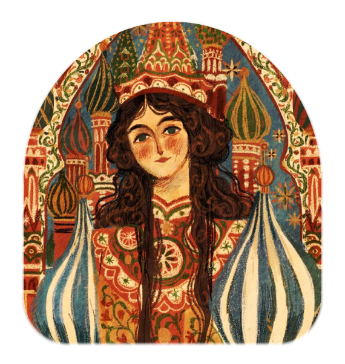
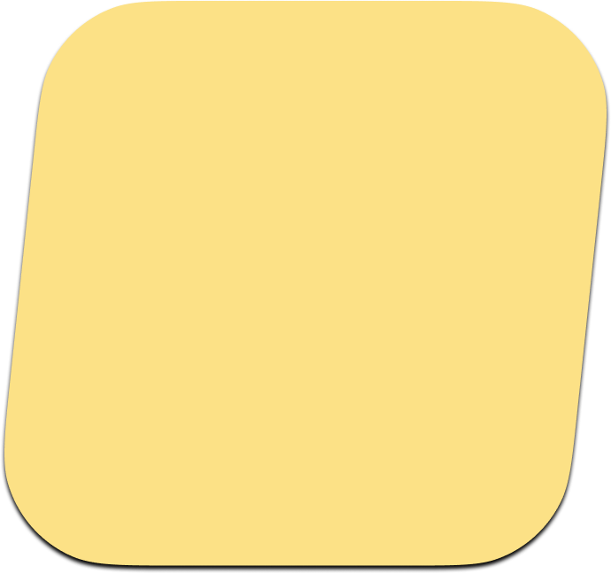

.png)

Русские
Кто это: крупнейший восточнославянский этнос, основное население России.
Язык: Русский (алфавит - кириллица).
Религия: Традиционно — православие.
Кухня: Блины, борщ, пельмени, пироги, а также традиционные супы (щи, окрошка) и напитки (квас, морс, сбитень).
Символы: Матрёшка, берёза, медведь, самовар.
Известные люди: Александр Пушкин (литература), Дмитрий Менделеев (наука), Пётр Чайковский (музыка), Фёдор Достоевский (философская проза).
Культурный вклад: Мировое лидерство в области классического балета, глубокая театральная школа.
Национальный состав обучающихся гимназии № 82:
краткий обзор истории и культуры этносов нашей школы

Сведения о национальном составе учащихся МАОУ гимназии № 82
(без учёта русских для наглядности)

Черкесы
Кто это: Древнейший коренной народ Северного Кавказа, самоназвание — адыги.
Язык: Адыгский (черкесский), имеющий два официальных литературных диалекта: адыгейский и кабардино-черкесский (алфавит — кириллица).
Религия: Преимущественно ислам суннитского толка; в основе этики лежит неписаный кодекс чести «Адыгэ Хабзэ».
Кухня: Либже (рагу из курицы или говядины), щипс (густой соус-суп), адыгейский сыр, лакумы (жареное тесто) и адыгский чай.
Символы: Черкеска с газырями, традиционный кинжал, адыгский флаг с 12 золотыми звездами, кабардинская порода лошадей.
Известные люди: Темрюк Идаров (верховный князь), Юрий Темирканов (дирижер), Мухадин Кишев (художник), Исхак Машбаш (писатель), Алим Кешоков (поэт).


Армяне
Кто это: Один из древнейших народов мира, коренное население Армянского нагорья.
Язык: Армянский (уникальный алфавит, созданный Месропом Маштоцем в 405 году).
Религия: Христианство (Армянская апостольская церковь); Армения — первое государство, принявшее христианство официально.
Кухня: Хоровац (шашлык), толма, хаш, кюфта, бастурма и национальный хлеб — лаваш.
Символы: Гора Арарат, гранат, абрикос, дудук (музыкальный инструмент), хачкары (крест-камни).
Известные люди: Иван Айвазовский (маринист), Шарль Азнавур (шансонье), Арам Хачатурян (композитор), Виктор Амбарцумян (астрофизик), Тигран Петросян (чемпион мира по шахматам).



Греки
Кто это: Один из древнейших народов мира, коренное население Балканского полуострова и островов Эгейского моря.
Язык: Греческий (уникальный алфавит, ставший основой для латиницы и кириллицы).
Религия: Преимущественно православие (Элладская православная церковь).
Кухня: Мусака, греческий салат (хориатики), сувлаки, оливки, сыр фета и морепродукты.
Символы: Парфенон, оливковая ветвь, театральные маски, амфоры и лавровый венок.
Известные люди: Гомер (поэт), Сократ (философ), Александр Македонский (полководец), Архимед (ученый).